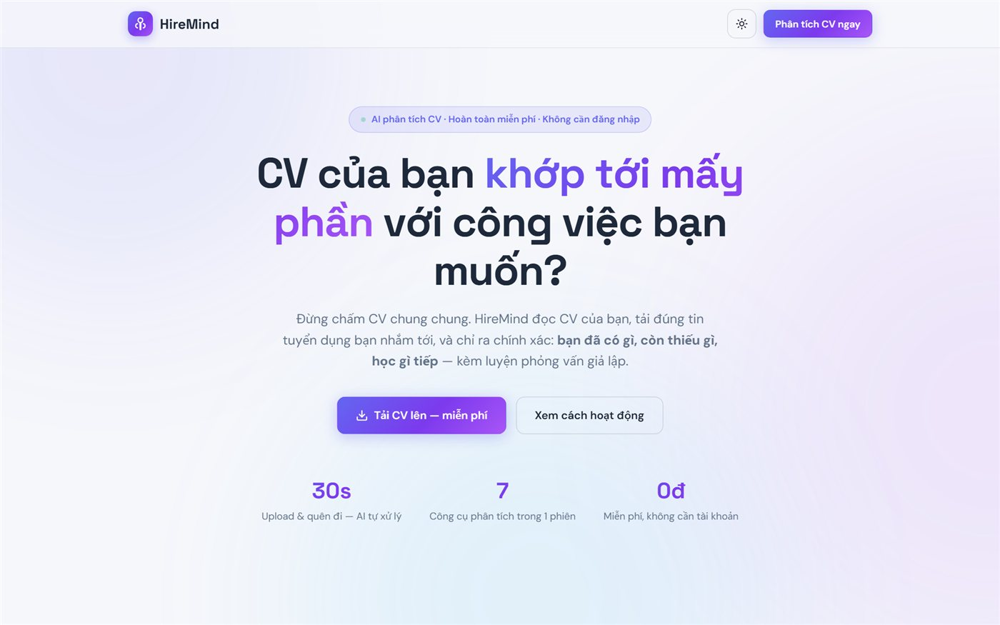
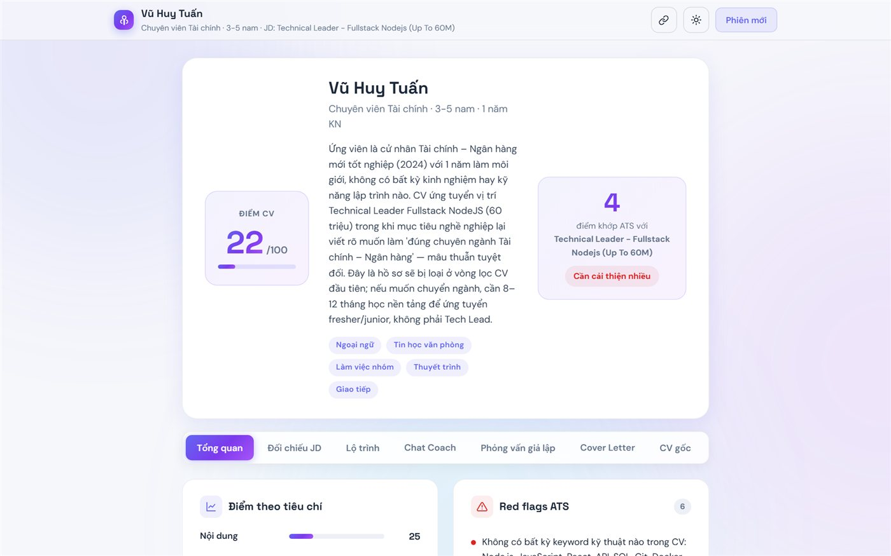
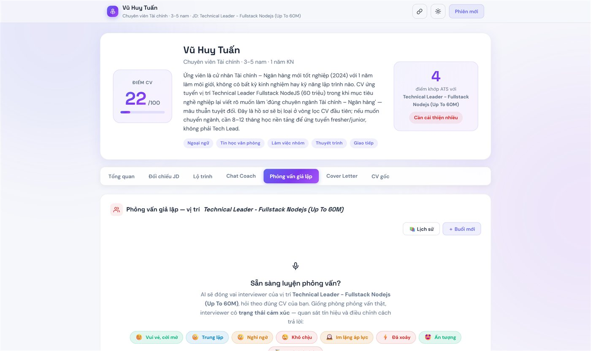
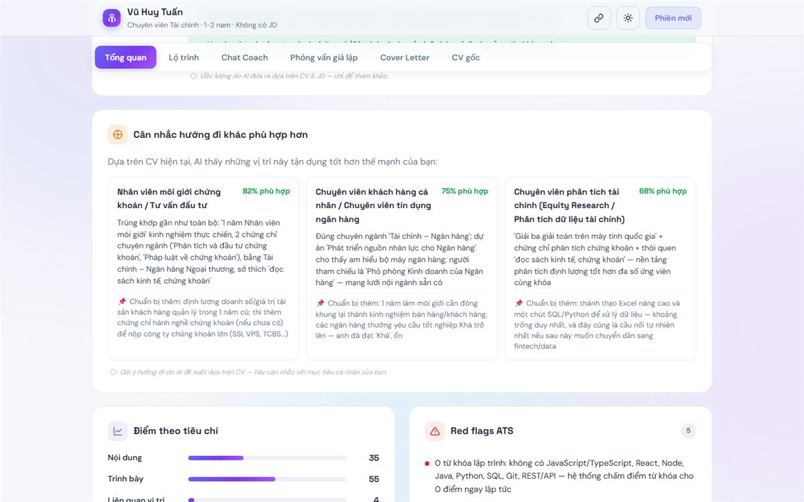
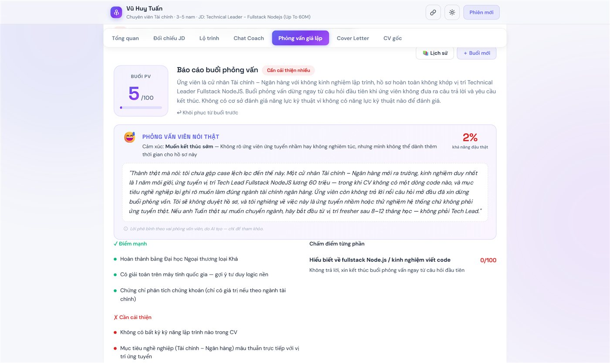

Chấm dứt kiểu chấm điểm CV theo khuôn mẫu chung chung. Tải CV lên, dán link vị trí bạn nhắm tới — HireMind bóc tách từng yêu cầu của nhà tuyển dụng: chỉ rõ điểm đạt, lỗ hổng kỹ năng, lộ trình học bù đắp — rồi đưa bạn vào phòng phỏng vấn mô phỏng với AI mang tâm lý như người thật.

Các công cụ hiện nay chỉ chấm điểm CV một cách cô lập, chung chung — hoàn toàn tách rời ngữ cảnh của tin tuyển dụng cụ thể. Ứng viên loay hoay tự sửa theo cảm tính, tiếp tục ứng tuyển và nhận lại sự im lặng.
Từ "bản CV trong điện thoại" đến "tâm thế vững vàng bước vào phòng phỏng vấn" — gói gọn trong một phiên làm việc, không rào cản đăng nhập.
Tải hồ sơ lên là có ngay một trang phiên riêng, mở lại được từ bất kỳ đâu. Không đăng ký, không mật khẩu.

Ba tính năng chưa từng xuất hiện trên bất kỳ công cụ chấm CV nào hiện nay.

Mô phỏng từ cởi mở, hoài nghi, thăm dò đến tạo áp lực (stress interview)… Giao diện phản ánh trực tiếp biểu cảm người phỏng vấn, kèm chỉ dẫn tâm lý giúp ứng viên ứng biến linh hoạt.

Khi hồ sơ lệch hướng, AI đề xuất những vị trí CV thực sự có lợi thế hơn — kèm tỉ lệ phù hợp, bằng chứng từ CV và điều cần chuẩn bị nếu chuyển hướng.

Kết thúc buổi luyện, hệ thống tổng kết đúng suy nghĩ thật của người phỏng vấn: vì sao hồ sơ này bị loại và ấn tượng đọng lại sau cuộc trò chuyện.